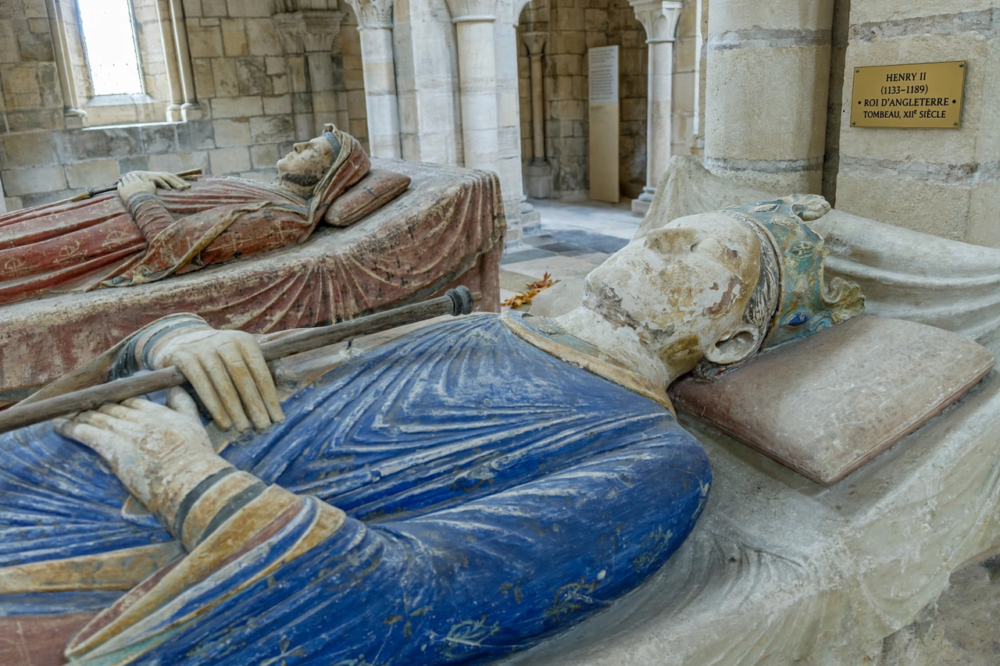

Henry II of England
From Wikipedia, the free encyclopedia

Henry II (5 March 1133 – 6 July 1189) was King of England from 1154 until his death, and, through inheritance and marriage, ruler of a vast assemblage of territories — the Angevin Empire — stretching from Scotland to the Pyrenees. He restored royal authority after the Anarchy, founded the English Common law through his legal reforms, quarrelled catastrophically with his friend and archbishop Thomas Becket (murdered in Canterbury Cathedral in 1170), and spent his last years fighting his own sons.
Accession and empire
Son of Geoffrey of Anjou and the Empress Matilda (Henry I's daughter), Henry inherited Anjou, Normandy and England (ending the civil war with Stephen) and added Aquitaine by marriage to Eleanor of Aquitaine, Louis VII's divorced queen. Ruling from no fixed capital, he governed itinerantly, restored castles and coinage, and used itinerant justices and written writs to make royal justice routine.
Law and Becket
Henry's assizes — Clarendon (1166), Northampton, the possessory assizes, trial by jury's expansion — are the foundation charters of the common law. His attempt to discipline criminous clergy (Constitutions of Clarendon, 1164) drove Becket into exile; penitent knights' murder of the archbishop on 29 December 1170 made Becket a saint and Henry a public penitent, scourged at Canterbury in 1174.
Last years
His sons — Henry the Young King, Richard, Geoffrey, John — rebelled repeatedly, backed by Eleanor (imprisoned for it) and the French king. Dying at Chinon in 1189, defeated by Richard and Philip II, he left the empire to Richard the Lionheart, who would spend it on crusade and ransom.